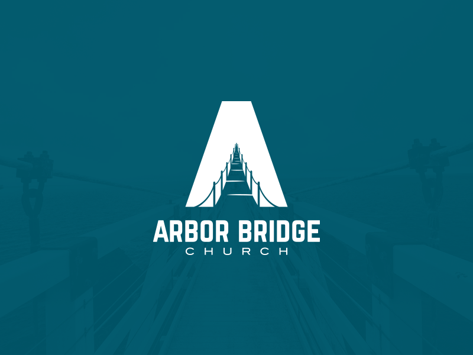
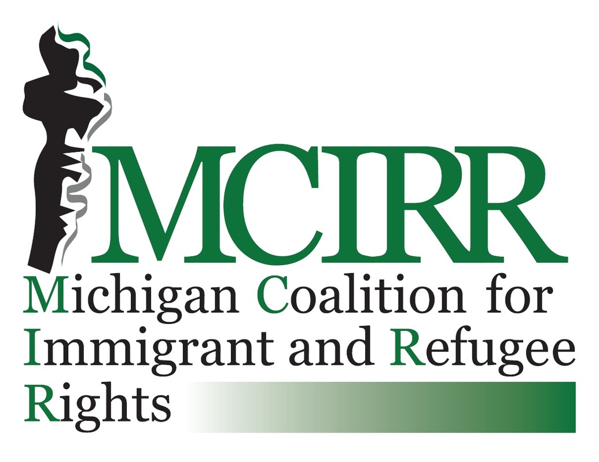
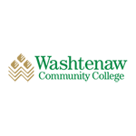

Meet and connect with people in the Washtenaw community through these groups.

If you are Christian, the Arbor Bridge Church might be a good place to meet others who share the same religion. If
you celebrate this religion, this church can be a good place to connect with others as well as connect with your
own spirituality.

The Michigan Coalition for Immigrant and Refugree Rights (MCIRR) has always been an advocate for immigrant rights. If
you are interested in the opportunity to connect with others with a passion for making a difference, this can be a great
place to start.
The University of Michigan is a university located at the heart of Ann Arbor. There are many opportunities to gather
with others with similar interests on campus. This can range from art shows, stand up comedies, and orchestral
performances.

Washtenaw Community College is the local college within Washtenaw County. Here, there are many opportunities to learn
various topics for a low price. Take advantage of the chance to connect with others through learning.